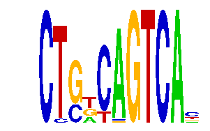

family_17 |
|---|
|  |
| Download PWM |
| Download instances (motifs) |
| Show motif distribution |
Query_ID | Query_Consensus | Subject_Name | Source_DB | Subject_ID | Length | Orientation | Offset | Divergence | Overlap | Subject_Consensus |
|---|---|---|---|---|---|---|---|---|---|---|
| family_17 | CTGNCAGTCAN | TCANNTGAY | JASPAR | PF0018 | 9 | reverse-complement | 6 | 0.410 | 5 | TCACGTGAC |
| family_17 | CTGNCAGTCAN | MAFG | HOCOMOCO | MAFG_HUMAN.H10MO.S | 7 | reverse-complement | 5 | 0.533 | 6 | NATGACT |
| family_17 | CTGNCAGTCAN | MYOD1 | HOCOMOCO | MYOD1_HUMAN.H10MO.C | 9 | as given | -4 | 0.798 | 5 | SCASCTGTC |
Sequence | Start_position (from start) | Start_position (from end) | Average conservation | Best conservation score | Instance_with_best_CS | Best_Z-score | Instance_with_best_ZS | Strand |
|---|---|---|---|---|---|---|---|---|
| chr6:24557300-24558900 | 158 | 169 | 0.00254545 | 0.012 | CTSRCAGTCA. | 12.493324 | CTSRCAGTCA. | 1 |
| chr12:25757400-25758700 | 1072 | 1083 | 0.0139091 | 0.019 | CTGKYAGTCA. | 13.208666 | CTGKYAGTCA. | 1 |
| chr1:43201300-43203046 | 407 | 418 | 0.0178182 | 0.032 | CTSRCAGTCA. | 12.493324 | CTSRCAGTCA. | 1 |
| chr2:76736449-76738500 | 55 | 66 | 0.909182 | 1 | CTSKCAGTCA. | 13.606909 | CTSKCAGTCA. | -1 |
| chr18:11387554-11389100 | 521 | 532 | 0.00390909 | 0.008 | CKGKCAGTCA. | 13.606909 | CTSKCAGTCA. | 1 |
| chr19:36184672-36186000 | 367 | 378 | 0.00127273 | 0.005 | CTGKCMGTCA. | 13.221892 | CTGKCMGTCA. | 1 |
| chr13:12335600-12336900 | 344 | 355 | 0.0160909 | 0.026 | CTGKYAGTCA. | 12.261244 | CTGKCRGTCA. | 1 |
| chr13:12409200-12411000 | 1161 | 1172 | 0 | 0 | CKGKCAGTCA. | 12.261244 | CTGKCRGTCA. | 1 |
| chr13:45717600-45719300 | 557 | 568 | 0.0518182 | 0.07 | CYSGCAGTCA. | 13.221892 | CTGKCMGTCA. | 1 |
| chr7:3297200-3299400 | 2064 | 2075 | 0.00881818 | 0.035 | CKGKCAGTCA. | 12.261244 | CTGKCRGTCA. | 1 |
| chr11:48338400-48339635 | 972 | 983 | 0.000363636 | 0.002 | CTGKYAGTCA. | 13.208666 | CTGKYAGTCA. | -1 |
| chr18:11196200-11197400 | 936 | 947 | 0.00609091 | 0.047 | CTSKCAGTCA. | 13.606909 | CTSKCAGTCA. | 1 |
| chr10:7007500-7009900 | 2127 | 2138 | 0.00336364 | 0.012 | CTGKCRGTCA. | 12.261244 | CTGKCRGTCA. | -1 |
| chr11:21462943-21465606 | 860 | 871 | 0.000454545 | 0.001 | CKGKCAGTCA. | 12.261244 | CTGKCRGTCA. | -1 |
| chr7:56079800-56081513 | 1114 | 1125 | 0.00263636 | 0.008 | CTGKCAGTCA. | 13.221892 | CTGKCMGTCA. | 1 |
| chr9:66881000-66882300 | 631 | 642 | 9.09091e-05 | 0.001 | CYSGCAGTCA. | 14.437937 | CYSGCAGTCA. | 1 |
| chr9:24699628-24703000 | 2054 | 2065 | 0.411636 | 0.811 | CTSRCAGTCA. | 13.606909 | CTSKCAGTCA. | 1 |
| chr5:122547700-122549600 | 1560 | 1571 | 0.022 | 0.028 | CTGKYAGTCA. | 13.208666 | CTGKYAGTCA. | -1 |
| chr11:30126413-30127500 | 990 | 1001 | 0.0124545 | 0.029 | CTSRCAGTCA. | 12.493324 | CTSRCAGTCA. | 1 |
| chr1:43293900-43297200 | 750 | 761 | 0.00172727 | 0.006 | CTSKCAGTCA. | 13.049695 | CKGKCAGTCA. | 1 |
| chr13:12128224-12131300 | 122 | 133 | 0.997364 | 1 | CYSGCAGTCA. | 12.493324 | CTSRCAGTCA. | 1 |
| chr13:12406000-12408400 | 1998 | 2009 | 0.000181818 | 0.002 | CKGKCAGTCA. | 13.606909 | CTSKCAGTCA. | 1 |
| chr5:122543271-122546700 | 570 | 581 | 0.00218182 | 0.009 | CYSGCAGTCA. | 14.437937 | CYSGCAGTCA. | 1 |
| chr2:113955810-113956810 | 491 | 502 | 0.973091 | 1 | CTSRCAGTCA. | 12.493324 | CTSRCAGTCA. | 1 |
| chr13:46602400-46605300 | 1856 | 1867 | 0.0149091 | 0.029 | CTGKCAGTCA. | 13.049695 | CKGKCAGTCA. | -1 |
| chr18:11044131-11045131 | 586 | 597 | 1 | 1 | CTSRCAGTCA. | 12.493324 | CTSRCAGTCA. | -1 |
| chr9:24772900-24774281 | 1304 | 1315 | 0.00209091 | 0.007 | CTSRCAGTCA. | 12.493324 | CTSRCAGTCA. | -1 |
| chr9:24781273-24782273 | 849 | 860 | 0.0172727 | 0.028 | CTSRCAGTCA. | 12.493324 | CTSRCAGTCA. | -1 |
| chr1:43200126-43201200 | 335 | 346 | 0.0869091 | 0.136 | CTSRCAGTCA. | 12.493324 | CTSRCAGTCA. | 1 |
| chr11:11896415-11897600 | 236 | 247 | 0.162273 | 0.234 | CTGKYAGTCA. | 13.049695 | CKGKCAGTCA. | 1 |
| chr9:115775900-115777560 | 1341 | 1352 | 0.00118182 | 0.007 | CTGKYAGTCA. | 13.208666 | CTGKYAGTCA. | 1 |
| chr8:59833341-59834341 | 716 | 727 | 0.002 | 0.005 | CKGKCAGTCA. | 12.261244 | CTGKCRGTCA. | 1 |
| chr14:55618900-55620600 | 716 | 727 | 0.00245455 | 0.008 | CTGKCAGTCA. | 13.049695 | CKGKCAGTCA. | 1 |
| chr2:74873800-74875500 | 121 | 132 | 0.00490909 | 0.012 | CTSRCAGTCA. | 12.493324 | CTSRCAGTCA. | 1 |
| chr18:11089100-11090473 | 853 | 864 | 0.415455 | 1 | CTGKCMGTCA. | 12.493324 | CTSRCAGTCA. | 1 |
| chr2:90969400-90973057 | 1685 | 1696 | 1 | 1 | CTSRCAGTCA. | 12.493324 | CTSRCAGTCA. | 1 |
| chr9:25024165-25025165 | 538 | 549 | 0.00209091 | 0.007 | CTGKYAGTCA. | 13.208666 | CTGKYAGTCA. | 1 |
| chr6:112344600-112347000 | 934 | 945 | 0.0126364 | 0.03 | CTGKYAGTCA. | 12.261244 | CTGKCRGTCA. | 1 |
| chr2:148428600-148430135 | 262 | 273 | 0.00527273 | 0.009 | CKGKCAGTCA. | 12.261244 | CTGKCRGTCA. | 1 |